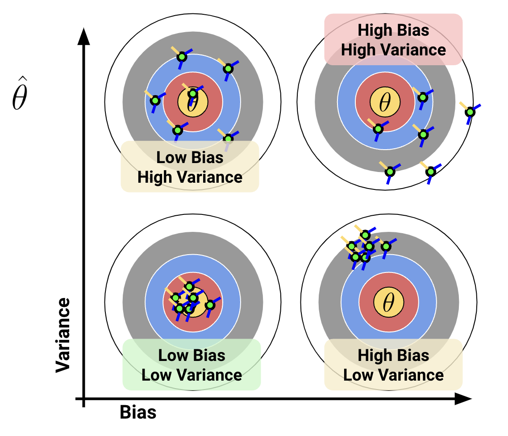
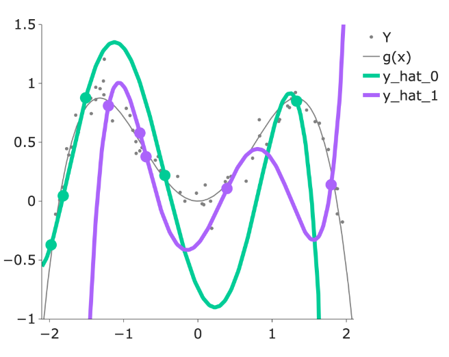
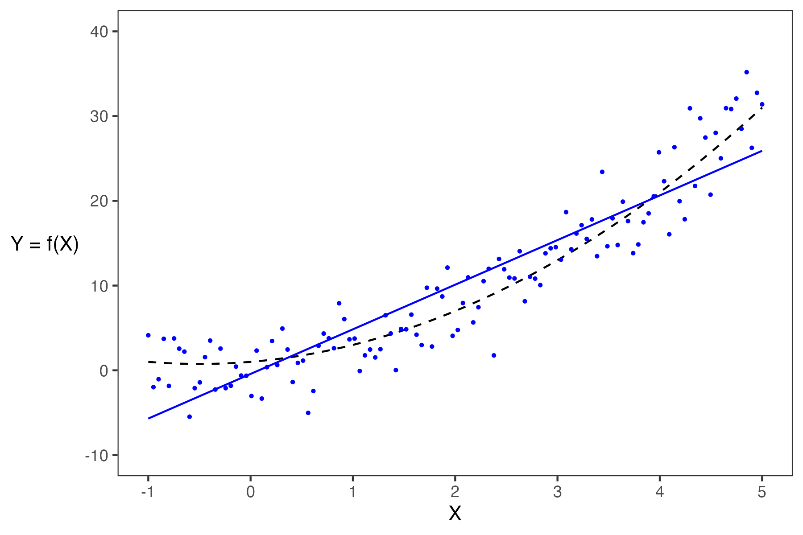
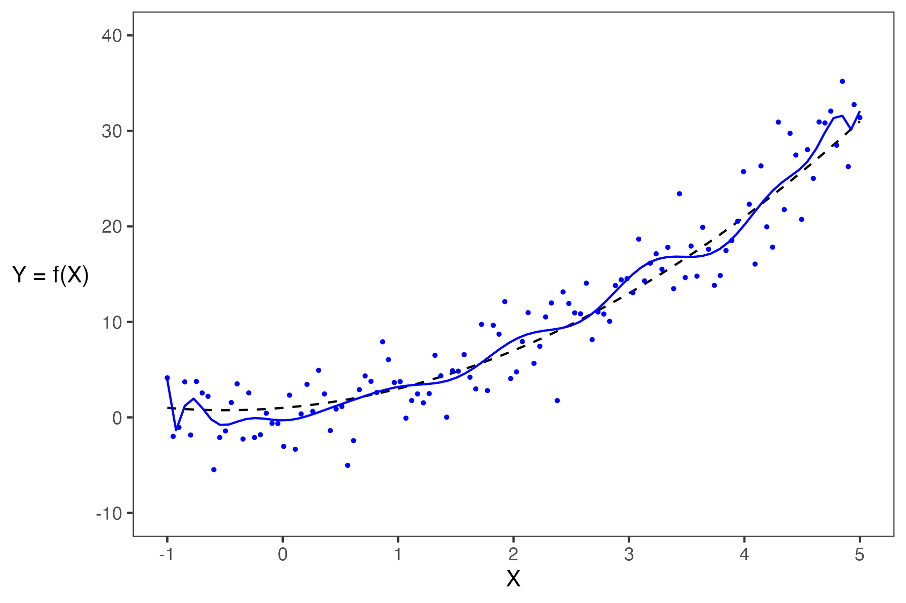
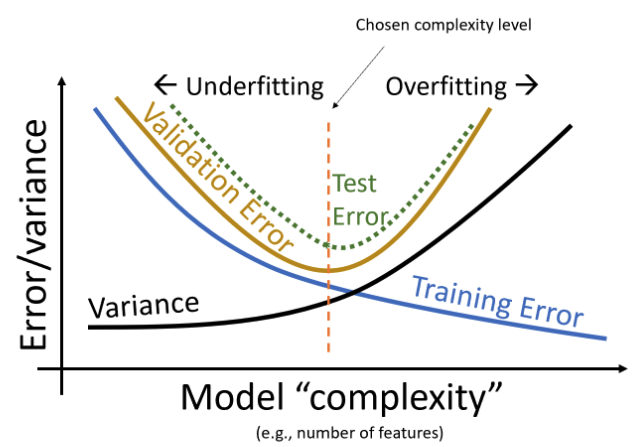

18 Estimators, Bias, and Variance
Last time, we introduced the idea of random variables: numerical functions of a sample. Most of our work in the last lecture was done to build a background in probability and statistics. Now that we’ve established some key ideas, we’re in a good place to apply what we’ve learned to our original goal – understanding how the randomness of a sample impacts the model design process.
In this lecture, we will delve more deeply into the idea of fitting a model to a sample. We’ll explore how to re-express our modeling process in terms of random variables and use this new understanding to steer model complexity.
18.1 Brief Recap
- Let \(X\) be a random variable with distribution \(P(X=x)\).
- \(\mathbb{E}[X] = \sum_{x} x P(X=x)\)
- \(\text{Var}(X) = \mathbb{E}[(X-\mathbb{E}[X])^2] = \mathbb{E}[X^2] - (\mathbb{E}[X])^2\)
- Let \(a\) and \(b\) be scalar values.
- \(\mathbb{E}[aX+b] = aE[\mathbb{X}] + b\)
- \(\text{Var}(aX+b) = a^2 \text{Var}(X)\)
- Let \(Y\) be another random variable.
- \(\mathbb{E}[X+Y] = \mathbb{E}[X] + \mathbb{E}[Y]\)
- \(\text{Var}(X + Y) = \text{Var}(X) + \text{Var}(Y) + 2\text{Cov}(X,Y)\)
Note that \(\text{Cov}(X,Y)\) would equal 0 if \(X\) and \(Y\) are independent.
There is also one more important property of expectation that we should look at. Let \(X\) and \(Y\) be independent random variables: \[ \mathbb{E}[XY] = \mathbb{E}[X]\mathbb{E}[Y] \]
18.2 Data-Generating Processes (DGP)
18.2.1 Sample Statistics
Today, we’ve talked extensively about populations; if we know the distribution of a random variable, we can reliably compute expectation, variance, functions of the random variable, etc. Note that:
- The distribution of a population describes how a random variable behaves across all individuals of interest.
- The distribution of a sample describes how a random variable behaves in a specific sample from the population.
In Data Science, however, we often do not have access to the whole population, so we don’t know its distribution. As such, we need to collect a sample and use its distribution to estimate or infer properties of the population. In cases like these, we can take several samples of size \(n\) from the population (an easy way to do this is using df.sample(n, replace=True)), and compute the mean of each sample. When sampling, we make the (big) assumption that we sample uniformly at random with replacement from the population; each observation in our sample is a random variable drawn i.i.d from our population distribution. Remember that our sample mean is a random variable since it depends on our randomly drawn sample! On the other hand, our population mean is simply a number (a fixed value).
18.2.2 Sample Mean Properties
Consider an i.i.d. sample \(X_1, X_2, ..., X_n\) drawn from a population with mean 𝜇 and SD 𝜎. We define the sample mean as \[\bar{X}_n = \frac{1}{n} \sum_{i=1}^n X_i\]
The expectation of the sample mean is given by: \[\begin{align} \mathbb{E}[\bar{X}_n] &= \frac{1}{n} \sum_{i=1}^n \mathbb{E}[X_i] \\ &= \frac{1}{n} (n \mu) \\ &= \mu \end{align}\]
The variance is given by: \[\begin{align} \text{Var}(\bar{X}_n) &= \frac{1}{n^2} \text{Var}( \sum_{i=1}^n X_i) \\ &= \frac{1}{n^2} \left( \sum_{i=1}^n \text{Var}(X_i) \right) \\ &= \frac{1}{n^2} (n \sigma^2) = \frac{\sigma^2}{n} \end{align}\]
The standard deviation is: \[ \text{SD}(\bar{X}_n) = \frac{\sigma}{\sqrt{n}} \]
\(\bar{X}_n\) is normally distributed (in the limit) by the Central Limit Theorem (CLT).
18.2.3 Central Limit Theorem
In Data 8 and in the previous lecture, you encountered the Central Limit Theorem (CLT). This is a powerful theorem for estimating the distribution of a population with mean \(\mu\) and standard deviation \(\sigma\) from a collection of smaller samples. The CLT tells us that if an i.i.d sample of size \(n\) is large, then the probability distribution of the sample mean is roughly normal with mean \(\mu\) and SD of \(\frac{\sigma}{\sqrt{n}}\). More generally, any theorem that provides the rough distribution of a statistic and doesn’t need the distribution of the population is valuable to data scientists! This is because we rarely know a lot about the population.

Importantly, the CLT assumes that each observation in our samples is drawn i.i.d from the distribution of the population. In addition, the CLT is accurate only when \(n\) is “large”, but what counts as a “large” sample size depends on the specific distribution. If a population is highly symmetric and unimodal, we could need as few as \(n=20\); if a population is very skewed, we need a larger \(n\). If in doubt, you can bootstrap the sample mean and see if the bootstrapped distribution is bell-shaped. Classes like Data 140 investigate this idea in great detail.
For a more in-depth demo, check out onlinestatbook.
18.3 Estimation
At this point in the course, we’ve spent a great deal of time working with models. When we first introduced the idea of modeling a few weeks ago, we did so in the context of prediction: using models to make accurate predictions about unseen data. Another reason we might build models is to better understand complex phenomena in the world around us. Inference is the task of using a model to infer the true underlying relationships between the feature and response variables. For example, if we are working with a set of housing data, prediction might ask: given the attributes of a house, how much is it worth? Inference might ask: how much does having a local park impact the value of a house?
A major goal of inference is to draw conclusions about the full population of data given only a random sample. To do this, we aim to estimate the value of a parameter, which is a numerical function of the population (for example, the population mean \(\mu\)). We use a collected sample to construct a statistic, which is a numerical function of the random sample (for example, the sample mean \(\bar{X}_n\)). It’s helpful to think “p” for “parameter” and “population,” and “s” for “sample” and “statistic.”
Since the sample represents a random subset of the population, any statistic we generate will likely deviate from the true population parameter, and it could have been different. We say that the sample statistic is an estimator of the true population parameter. Notationally, the population parameter is typically called \(\theta\), while its estimator is denoted by \(\hat{\theta}\).
To address our inference question, we aim to construct estimators that closely estimate the value of the population parameter. We evaluate how “good” an estimator is by answering three questions:
- How close is our answer to the parameter? (Risk / MSE) \[ MSE(\hat{\theta}) = E[(\hat{\theta} - \theta)^2]\]
- Do we get the right answer for the parameter, on average? (Bias) \[\text{Bias}(\hat{\theta}) = E[\hat{\theta} - \theta] = E[\hat{\theta}] - \theta\]
- How variable is the answer? (Variance) \[Var(\hat{\theta}) = E[(\hat{\theta} - E[\hat{\theta}])^2] \]
If the Bias of an estimator \(\hat{theta}\) is zero, then it is said to be an unbiased estimator. For example, sample mean is unbiased for the population mean.
This relationship between bias and variance can be illustrated with an archery analogy. Imagine that the center of the target is the \(\theta\) and each arrow corresponds to a separate parameter estimate \(\hat{\theta}\)

Ideally, we want our estimator to have low bias and low variance, but how can we mathematically quantify that? See Section 18.4 for more detail.
18.3.1 Prediction as a Data-Generating Process
Now that we’ve established the idea of an estimator, let’s see how we can apply this learning to the modeling process. To do so, we’ll take a moment to formalize our data collection and models in the language of random variables.
Say we are working with an input variable, \(x\), and a response variable, \(Y\). We assume that \(Y\) and \(x\) are linked by some relationship \(g\); in other words, \(Y = g(x)\) where \(g\) represents some “universal truth” or “law of nature” that defines the true underlying relationship between \(x\) and \(Y\). In the image below, \(g\) is denoted by the red line.
As data scientists, however, we have no way of directly “seeing” the underlying relationship \(g\). The best we can do is collect observed data out in the real world to try to understand this relationship. Unfortunately, the data collection process will always have some inherent error (think of the randomness you might encounter when taking measurements in a scientific experiment). We say that each observation comes with some random error or noise term, \(\epsilon\) (read: “epsilon”). This error is assumed to be a random variable with expectation \(\mathbb{E}(\epsilon)=0\), variance \(\text{Var}(\epsilon) = \sigma^2\), and be i.i.d. across each observation. The existence of this random noise means that our observations, \(Y(x)\), are random variables, where \(Y = g(x) + \epsilon\) is the data-generating process. This can be seen on our graph because the points do not line perfectly with the true underlying relationship, and the residual is the noise \(\epsilon\).

We can only observe our IID random sample of data, represented by the blue points above. From this sample, we want to estimate the true relationship \(g\). We do this by training a model on the data to obtain our optimal \(\hat{\theta}\), \[ {\hat{\theta}} = \text{arg}\underset{\theta}{\text{min}}\ \left(\frac{1}{n} \sum_{i=1}^n \textbf{Loss}(Y_i, f_{\theta}(X_i))\right) + \lambda\ \textbf{Regularizer}(\theta)\]
and predicting the value of \(Y\) at a given \(x\) location, \[ \hat{Y}(x) = \hat{f}(x)\]
where the model \(\hat{Y}(x)\) can be used to estimate \(g\). The error in our prediction is: \[ (Y-\hat{Y}(x))^2\]
Here, \(X_i\), \(Y_i\), \(\hat{\theta}\), and \(\hat{Y}(x)\) are random variables. An example prediction model \(\hat{Y}(x)\) is shown below.
\[\text{True relationship: } g(x)\]
\[\text{Observed relationship: }Y = g(x) + \epsilon\]
\[\text{Prediction: }\hat{Y}(x) = \hat{f}(x)\]

When building models, it is also important to note that our choice of features will also significantly impact our estimation. In the plot below, you can see how the different models (green and purple) can lead to different estimates.

Overall, we fit (train) a model based on our sample of (x,y) pairs, and our model estimates the true relationship \(Y=g(x)+\epsilon\), where at every \(x\), our prediction for \(Y\) is \(\hat{Y}(x) = \hat{f}(x)\).
18.3.2 Model Complexity
The bias and variance of a model (covered in detail in the next section) is largely determined by its complexity.
- If a model has low complexity, it will likely have high bias and low variance.

- If a model has high complexity, it will likely have low bias and high variance.

18.4 Bias-Variance Tradeoff
Recall the model and the data we generated from that model in the last section:
\[\text{True relationship: } g(x)\]
\[\text{Observed relationship: }Y = g(x) + \epsilon\]
\[\text{Prediction: }\hat{Y}(x) = \hat{f}(x)\]
Just like an estimator, we can evaluate a model’s quality by considering its behavior across different training datasetes (i.e., parallel sampling universes):
- Model bias: How close is our fitted model to \(g\), on average?
\[\begin{align*} \text{Bias}(f(x)) = \mathbb{E}[f(x)] - g(x) \end{align*}\]
- Model variance: How much does our fitted model vary across random samples?
\[\begin{align*} \text{Var}(f(x)) = \mathbb{E}[f(x)- \mathbb{E}[f(x)]^2] \end{align*}\]
- Model risk (MSE): What’s the typical squared error between our model’s predictions and the actual outcomes?
\[\begin{align*} \mathbb{E}[(Y - \hat{Y})^2] \end{align*}\]
18.4.1 Decomposition of the Model Risk
Goal: Compute \(\mathbb{E}[(Y - \hat{Y})^2]\)
\[\begin{align*} \text{Var}(Y - \hat{Y}) & = \mathbb{E}[ (Y - \hat{Y})^2 ] - \left( \mathbb{E}[ Y - \hat{Y} ] \right)^2 \\ \mathbb{E}[ (Y - \hat{Y})^2 ] & = \text{Var}(Y - \hat{Y}) + \left( \mathbb{E}[ Y - \hat{Y} ] \right) ^2\\ \end{align*}\]
Therefore, we get:
\[\begin{align*} \mathbb{E}[(Y - \hat{Y})^2] &= \sigma ^ 2 + \text{Var}(f(\vec{X})) + \text{Bias}(f(\vec{X}))^2 \end{align*}\]
18.4.2 The Bias-Variance Decomposition
In the previous section we derived the following:
\[\begin{align*} \mathbb{E}[(Y - \hat{Y})^2] &= \sigma ^ 2 + \text{Var}(f(\vec{X})) + \text{Bias}(f(\vec{X}))^2 \end{align*}\]
The above equation can be interpreted as:
\[\begin{align*} \text{Model Risk} = \text{Irreducible error} + \text{Model Variance} + (\text{Model Bias})^2 \end{align*}\]
- Irreducible error / observational variance / noise cannot be addressed by modeling.
- Bias-Variance Tradeoff:
- To decrease model bias, we increase model complexity. As a result, the model will have higher model variance.
- To decrease model variance, we decrease model complexity. The model may underfit the sample data and may have higher model bias.


High variance corresponds to overfitting.
- Your model may be too complex
- You can reduce the number of parameters, or regularize
High bias corresponds to underfitting
- Your model may be too simple to capture complexities in the data
- You may have overregularized \(\rightarrow\) Regularization biases us towards a constant model in exchange for reduced variance!
Irreducible error
- For a fixed dataset, there is nothing you can do. That’s why it’s irreducible!